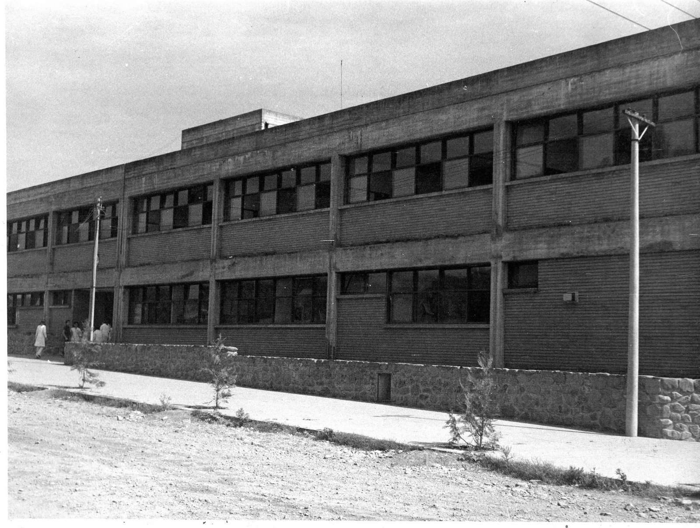

HISTORIA RESUMIDA DE LA ESCUELA NORMAL SUPERIOR
"JUAN CARLOS DÁVALOS" DE SAN JOSE DE METAN
(PROVINCIA DE SALTA)

Reseña del Prof. Eduardo Poma El primer Colegio del Nivel Secundario que hubo en
Mentán surge por iniciativa del entonces párroco José Mir,en 1943. Tenia
el carácter de establecimiento privado, con el nombre oficial de Instituto adcripto "Joé Manuela Estrada" y abarcaba
solamente el ciclo básico del viejo sistema, es decir, hasta el 3er año.
Los egresados de este Instituto si querían seguir estudiando se veian obligados a trasladarse a las ciudades vecinas, generalmente
a salta y Tucumán. Esta circunstancia, mas la obligacion de abonar un arancel para poder cursar los estudios en el Colegio fundado por el
padre Mir, hacia que solo las familias
pudientes alentaran la esperanza de poder enviar sus hijos a las Universidades.
En 1950 Metá alcanza los 10.000 habitantes, y con ellos la categoría de ciudad que le otorga la provincia, pero seguía sin
contar con una institucion de enseñanza secundaria completa. Esto movilizo a un grupo de vecinos que realizaron intensas gestiones ante las
autoridades de la nación, destacandose entre ellos los señores Segundo Ríos, Tranquilino Jerez, Riserio Concha e Ignacio Nieva. Las
mismas culminaron exitosamente ya que el 12 de abril de 1955 el Ministerio de Educacion crea por un decreto Ejecutivo un Colegio Nacional para Metán.